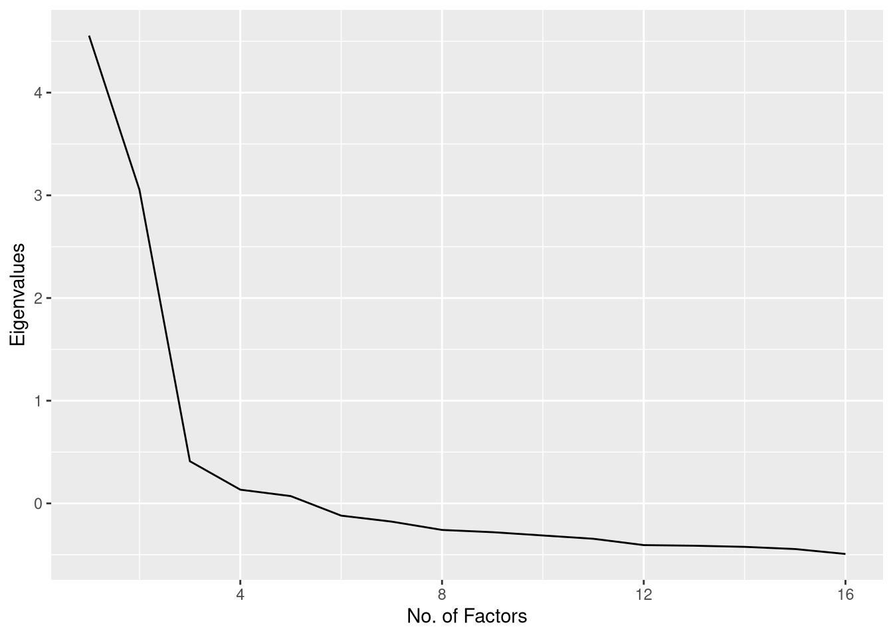
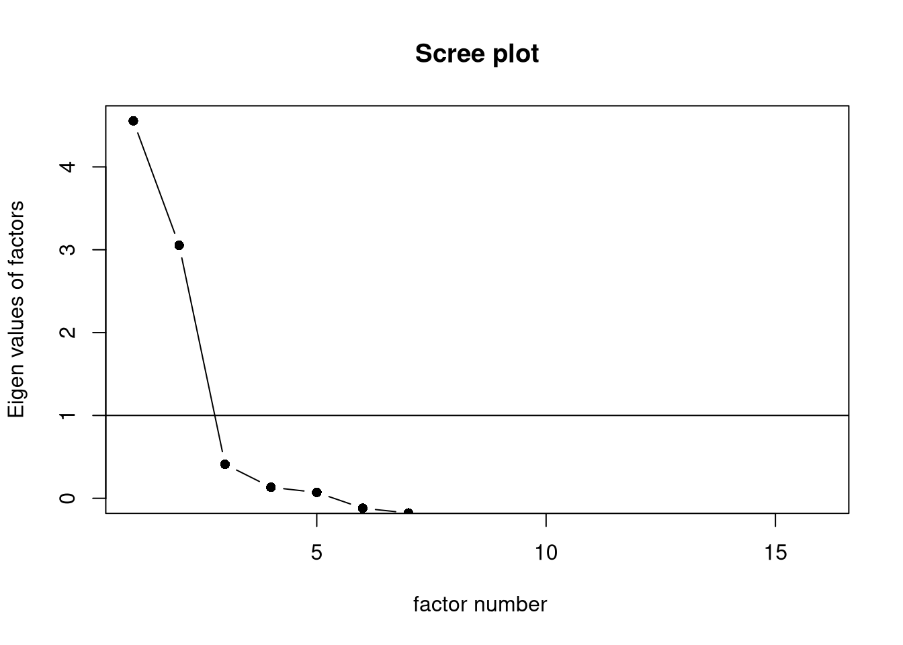
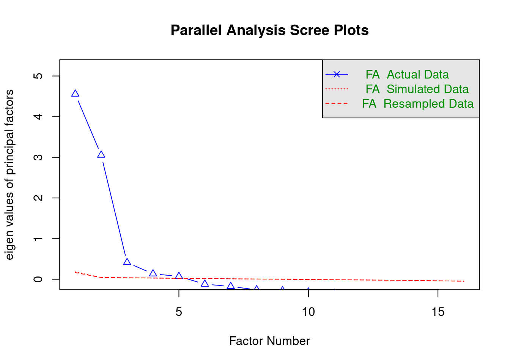
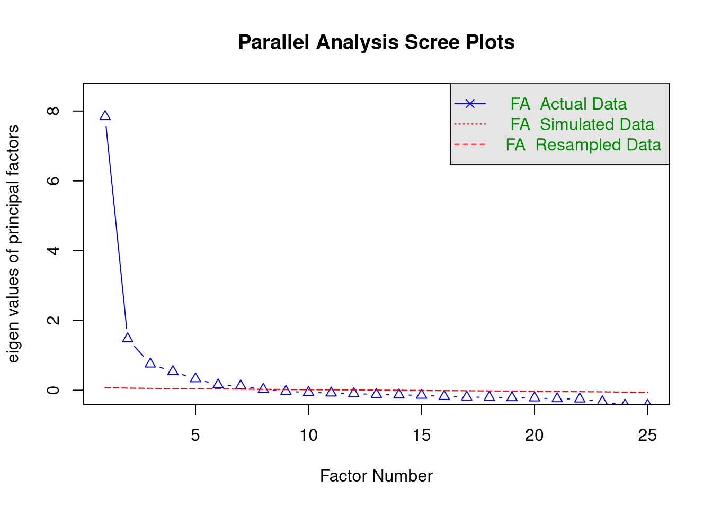

4.4 In-Class Exercises
In these exercises, we will continue with our re-analysis/replication of the Kestilä (2006) results. Rather than attempting a direct replication, we will now redo the analysis using exploratory factor analysis (EFA).
4.4.1
Load the ESSround1-b.csv dataset.
- These are the same data that you analyzed for the At-Home Exercises, but the processing/recoding that you should have done for those exercises has already been (mostly) implemented.
- It will be helpful to convert
cntryback into a factor.
library(dplyr)
ess <- read.csv("ESSround1-b.csv") %>%
mutate(cntry = factor(cntry))4.4.2
Kestilä (2006) claimed that running a PCA is a good way to test if the questions in the ESS measure attitudes towards immigration and trust in politics.
- Based on what you’ve learned from the readings and lectures, do you agree with this position?
Click for explanation
Hopefully not. PCA is not a method for estimating latent measurement structure; PCA is a dimension reduction technique that tries to summarize a set of data with a smaller set of component scores.
If we really want to estimate the factor structure underlying a set of observed variables, we should use EFA.
4.4.3
Suppose you had to construct the trust in politics and attitude towards immigration scales described by Kestilä (2006) based on the theory and background information presented in that article.
- What type of analysis would you choose?
- What key factors would influence your decision?
Click for explanation
- We are trying to estimate meaningful latent factors, so EFA would be an appropriate method.
- The theory presented by Kestilä (2006) did not hypothesize a particular number
of factors, so we would need to use appropriate techniques to estimate the best
number. In particular, combining information from:
- Scree plots
- Parallel analysis
- Substantive interpretability of the (rotated) factor loadings
- Since the factors are almost certainly correlated, we should apply an oblique rotation.
We will now rerun the two PCAs that you conducted for the
At-Home Exercises using EFA. We will estimate the
EFA models using the psych::fa() function, but we need to know how many
factors to extract.
- We could simply estimate a range of solutions and compare the results.
- We can restrict the range of plausible solutions and save some time by first checking/plotting the eigenvalues and running parallel analysis.
4.4.4
Estimate the number of latent factors underlying the Trust items based on the eigenvalues, the scree plot, and parallel analysis.
- How many factors are suggested by each method?
Hint: You can create a scree plot by supplying the vector of eigenvalues to
the qplot() function from the ggplot2 package and applying the geom_path()
geometry.
1. Eigenvalue estimation
Click to show code
## Load the psych package:
library(psych)
## Run a trivial EFA on the 'trust' items
efa_trust0 <- select(ess, trstlgl:impcntr) %>%
fa(nfactors = 1, rotate = "none") Click for explanation (EFA)
First, we run a trivial EFA using the psych::fa() function to estimate the
eigenvalues.
We don’t care about the factors yet, so we can extract a single factor.
We also don’t care about interpretable solutions, so we don’t need rotation.
## View the estimated eigenvalues:
round(efa_trust0$values, digits = 3)## [1] 4.555 3.054 0.411 0.134 0.071 -0.119 -0.177 -0.258 -0.280 -0.312
## [11] -0.344 -0.406 -0.412 -0.423 -0.444 -0.492Click for explanation (eigenvalue extraction)
We can check the eigenvalues to see what proportion of the observed variance is accounted for by each additional factor we may extract.
Since only one eigenvalue is greater than one, the so-called “Kaiser Criterion” would suggest extracting a single factor.
- The Kaiser Criterion is not a valid way to select the number of factors in EFA. So, we don’t want to rely on this information alone.
We can still use the eigenvalues to help us with factor enumeration, though. One way to do so is by plotting the eigenvalues in a scree plot.
2. Scree plot
Click to show code
Given a vector of estimated eigenvalues, we can create a scree plot using
ggplot() and the geom_line() or geom_path() geometry.
library(ggplot2)
library(magrittr)
efa_trust0 %$% data.frame(y = values, x = 1:length(values)) %>%
ggplot(aes(x, y)) +
geom_line() +
xlab("No. of Factors") +
ylab("Eigenvalues")
We can also use the psych::scree() function to create a scree plot directly
from the data.
select(ess, trstlgl:impcntr) %>% scree(pc = FALSE)
Click for explanation (scree plot)
Although the scree plot provides useful information, we need to interpret that information subjectively, and the conclusions are sometimes ambiguous, in this case.
- In this case, the plot seems to suggest either one or three components, depending on where we consider the “elbow” to lie.
As recommended in the lecture, we can also use “parallel analysis”
(Horn, 1965) to provide more objective
information about the number of factors. We’ll use the psych::fa.parallel()
function to implement parallel analysis.
- Parallel analysis relies on randomly simulated/permuted data, so we should set a seed to make sure our results are reproducible.
- We can set the
fa = "fa"option to get only the results for EFA.
3. Parallel Analysis
Click to show code
## Set the random number seed:
set.seed(235711)
## Run the parallel analysis:
pa_trust <- select(ess, trstlgl:impcntr) %>%
fa.parallel(fa = "fa") ## Parallel analysis suggests that the number of factors = 5 and the number of components = NAClick for explanation
The results of the parallel analysis suggest 5 factors.
If you’ve been paying close attention, you may have noticed that we need to compute the eigenvalues from the original data to run parallel analysis. Hence, we don’t actually need to run a separate EFA to estimate the eigenvalues.
## View the eigenvalues estimated during the parallel analysis:
pa_trust$fa.values## [1] 4.55517136 3.05362593 0.41073627 0.13364902 0.07116952 -0.11909803
## [7] -0.17729996 -0.25838504 -0.28014401 -0.31230246 -0.34437047 -0.40604399
## [13] -0.41192101 -0.42303666 -0.44425206 -0.49233019## Compare to the version from the EFA:
pa_trust$fa.values - efa_trust0$values## [1] 0 0 0 0 0 0 0 0 0 0 0 0 0 0 0 0## Recreate the scree plot from above:
pa_trust %$% data.frame(y = fa.values, x = 1:length(fa.values)) %>%
ggplot(aes(x, y)) +
geom_line() +
xlab("No. of Factors") +
ylab("Eigenvalues")
Of course, we also see the same scree plot printed as part of the parallel analysis. So, there’s really no reason to create a separate scree plot, at all, if we’re doing parallel analysis.
4. Conclusion
Click for explanation
The different criteria disagree on how many factors we should extract, but we have narrowed the range.
- Based on the scree plot and parallel analysis, we should consider solutions for 3 to 5 factors.
- We need to examine the factor loadings to see which solution makes the most substantive sense.
4.4.5
Do the same analysis for the attitudes toward immigration items.
Click to show code
This time, we’ll start by running the parallel analysis and get the eigenvalues
and scree plot from psych::fa.parallel().
## Set the seed:
set.seed(235711)
## Run parallel analysis on the 'attitudes' items:
pa_att <- select(ess, imsmetn:rfgbfml) %>% fa.parallel(fa = "fa")
## Parallel analysis suggests that the number of factors = 7 and the number of components = NA## Check the eigenvalues:
round(pa_att$fa.values, digits = 3)## [1] 7.841 1.474 0.748 0.534 0.327 0.152 0.123 0.025 -0.033 -0.064
## [11] -0.081 -0.098 -0.121 -0.137 -0.145 -0.179 -0.196 -0.204 -0.214 -0.222
## [21] -0.246 -0.253 -0.331 -0.425 -0.432Click for explanation
For the attitudes toward immigration analysis, the results are even more ambiguous than they were for the trust items.
- The Kaiser Criterion suggests 2 factors.
- The scree plot is hopelessly ambiguous.
- At least 3 factors?
- No more than 9 factors?
- Parallel analysis suggests 7 factors
Based on the scree plot and parallel analysis, it seems reasonable to consider solutions for 3 to 7 factors.
- Again, we need to check the substantive interpretation to choose the most reasonable solution.
To evaluate the substantive interpretability of the different solutions, we need to estimate the full EFA models for each candidate number of factors. We then compare the factor loadings across solutions to see which set of loadings define the most reasonable set of latent variables.
4.4.6
For the trust items, estimate the EFA models for each plausible number of components that you identified above.
- Use the
psych::fa()function to estimate the models.
You will need to specify a few key options.
- The data (including only the variables you want to analyze)
- The number of factors that you want to extract
- The rotation method
- The estimation method
- The method of estimating factor scores
Hint: You can save yourself a lot of typing/copy-pasting (and the attendant
chances of errors) by using a for() loop to iterate through numbers of factors.
Click to show code
## Define an empty list to hold all of our fitted EFA objects:
efa_trust <- list()
## Loop through the interesting numbers of factors and estimate an EFA for each:
for(i in 3:6)
efa_trust[[as.character(i)]] <- ess %>%
select(trstlgl:impcntr) %>%
fa(nfactors = i, # Number of factors = Loop index
rotate = "promax", # Oblique rotation
scores = "Bartlett") # Estimate factor scores with WLS4.4.7
Repeat the above analysis for the attitudes items.
Click to show code
efa_att <- list()
for(i in 3:7)
efa_att[[as.character(i)]] <- ess %>%
select(imsmetn:rfgbfml) %>%
fa(nfactors = i,
rotate = "promax",
scores = "Bartlett")4.4.8
Compare the factor loading matrices from the models estimated from the Trust items, and select the best solution.
Hints:
- The factor loadings are stored in the
loadingsslot of the object returned bypsych::fa(). - Looping can also be useful here.
Click to show code
for(x in efa_trust) print(x$loadings)##
## Loadings:
## MR1 MR3 MR2
## trstlgl 0.683
## trstplc 0.600
## trstplt 0.594 0.198
## trstep 0.725
## trstun 0.738
## stfeco 0.748
## stfgov 0.109 0.638
## stfdem 0.253 0.509
## stfedu 0.644
## stfhlth 0.628
## imsmetn 0.811
## imdfetn 0.875
## eimrcnt 0.768
## eimpcnt 0.878
## imrcntr 0.808
## impcntr 0.870
##
## MR1 MR3 MR2
## SS loadings 4.214 2.339 2.098
## Proportion Var 0.263 0.146 0.131
## Cumulative Var 0.263 0.410 0.541
##
## Loadings:
## MR1 MR3 MR2 MR4
## trstlgl 0.707
## trstplc 0.113 0.620
## trstplt 0.580 0.211
## trstep 0.709
## trstun 0.726
## stfeco 0.758
## stfgov 0.651
## stfdem 0.253 0.510
## stfedu 0.639
## stfhlth 0.622
## imsmetn 0.705 0.149
## imdfetn 0.908
## eimrcnt 0.213 0.864
## eimpcnt 0.942
## imrcntr 0.447 0.515
## impcntr 0.984 -0.110
##
## MR1 MR3 MR2 MR4
## SS loadings 3.458 2.334 2.107 1.061
## Proportion Var 0.216 0.146 0.132 0.066
## Cumulative Var 0.216 0.362 0.494 0.560
##
## Loadings:
## MR1 MR2 MR3 MR4 MR5
## trstlgl 0.165 0.677
## trstplc 0.725
## trstplt 0.202 0.631
## trstep 0.810
## trstun 0.653 0.128
## stfeco 0.736 -0.108
## stfgov 0.643 0.272 -0.174
## stfdem 0.511 0.203
## stfedu 0.668 -0.149 0.134
## stfhlth 0.637 -0.156
## imsmetn 0.707 0.144
## imdfetn 0.912
## eimrcnt 0.166 0.896
## eimpcnt 0.952
## imrcntr 0.421 0.531
## impcntr 0.995 -0.124
##
## MR1 MR2 MR3 MR4 MR5
## SS loadings 3.438 2.123 1.678 1.129 1.071
## Proportion Var 0.215 0.133 0.105 0.071 0.067
## Cumulative Var 0.215 0.348 0.452 0.523 0.590
##
## Loadings:
## MR1 MR2 MR3 MR4 MR5 MR6
## trstlgl 0.826
## trstplc 0.851
## trstplt 0.432 0.353 0.110
## trstep -0.153 1.092 -0.155
## trstun 0.470 0.191
## stfeco 0.704 -0.103 0.155
## stfgov 0.963 -0.123
## stfdem 0.545 0.156
## stfedu 0.653
## stfhlth 0.666
## imsmetn 0.708 0.143
## imdfetn 0.915
## eimrcnt 0.168 0.890
## eimpcnt 0.955
## imrcntr 0.423 0.529
## impcntr 0.998 -0.122
##
## MR1 MR2 MR3 MR4 MR5 MR6
## SS loadings 3.462 1.948 1.563 1.529 1.114 0.921
## Proportion Var 0.216 0.122 0.098 0.096 0.070 0.058
## Cumulative Var 0.216 0.338 0.436 0.531 0.601 0.659Click for explanation
Note: Any factor loadings with magnitude lower than 0.1 are suppressed in above output.
The factor loadings matrix indicates how strongly each latent factor (columns) associates with the observed items (rows). We can interpret these factor loadings in the same way that we would interpret regression coefficients (indeed, a factor analytic model can be viewed as a multivariate regression model wherein the latent factors are the predictors and the observed items are the outcomes).
- A higher factor loading indicates a stronger association between the item and
factor linked by that loading.
- Items with high factor loadings are “good” indicators of the respective factors.
- Items with only very low loadings do not provide much information about any factor.
- You may want to exclude such items from your analysis.
- Note that the size of the factor loadings depends on the number of factors. So, you should only consider excluding an observed item after you have chosen the number of latent factors.
When we print the loading matrix, we see additional information printed below the factor loadings.
- Proportion Var: What proportion of the items’ variance is explained by each of the factors.
- Cumulative Var: How much variance the factors explain, in total.
- If you estimated as many factors as items, then the Cumulative Var for
the final factor would be
1.00(i.e., 100%).
- If you estimated as many factors as items, then the Cumulative Var for
the final factor would be
4.4.9
Compare the factor loading matrices from the models estimated from the Attitudes items, and select the best solution.
Click to show code
for(x in efa_att) print(x$loadings)##
## Loadings:
## MR1 MR2 MR3
## imsmetn 0.801
## imdfetn 0.756 0.111
## eimrcnt 0.837
## eimpcnt 0.813
## imrcntr 0.854
## impcntr 0.771
## qfimchr 0.233 0.852
## qfimwht 0.135 0.712
## imwgdwn 0.308 -0.163
## imhecop 0.380 -0.143
## imtcjob 0.615
## imbleco 0.691
## imbgeco 0.681
## imueclt 0.558 -0.209
## imwbcnt 0.731
## imwbcrm 0.634
## imrsprc -0.487 -0.119
## pplstrd 0.259 -0.413
## vrtrlg -0.261 0.274
## shrrfg 0.529 -0.105
## rfgawrk -0.368
## gvrfgap -0.615 -0.151
## rfgfrpc 0.449
## rfggvfn -0.478
## rfgbfml -0.541
##
## MR1 MR2 MR3
## SS loadings 4.811 3.943 1.667
## Proportion Var 0.192 0.158 0.067
## Cumulative Var 0.192 0.350 0.417
##
## Loadings:
## MR2 MR1 MR4 MR3
## imsmetn 0.788
## imdfetn 0.734 0.144 0.115
## eimrcnt 0.854 -0.146
## eimpcnt 0.788 0.161
## imrcntr 0.861
## impcntr 0.744 0.191
## qfimchr -0.141 0.859
## qfimwht 0.735
## imwgdwn 0.601 0.237
## imhecop 0.656 0.210
## imtcjob 0.671 0.141
## imbleco 0.607 -0.157 0.156
## imbgeco 0.635 -0.123
## imueclt 0.368 -0.241 -0.187
## imwbcnt 0.536 -0.262
## imwbcrm 0.430 -0.257
## imrsprc 0.605
## pplstrd 0.219 -0.396
## vrtrlg 0.220 0.295
## shrrfg 0.300 -0.277
## rfgawrk 0.447
## gvrfgap 0.765
## rfgfrpc 0.228 -0.263
## rfggvfn 0.483
## rfgbfml 0.635
##
## MR2 MR1 MR4 MR3
## SS loadings 3.831 2.867 2.460 1.671
## Proportion Var 0.153 0.115 0.098 0.067
## Cumulative Var 0.153 0.268 0.366 0.433
##
## Loadings:
## MR2 MR1 MR5 MR3 MR4
## imsmetn 0.794
## imdfetn 0.733 0.156 0.117
## eimrcnt 0.905 -0.139 -0.229
## eimpcnt 0.781 0.110 0.197
## imrcntr 0.908 -0.117 -0.179
## impcntr 0.734 0.123 0.231
## qfimchr 0.114 -0.156 0.864
## qfimwht 0.165 0.735
## imwgdwn 0.717
## imhecop 0.695
## imtcjob 0.532 0.129 0.207
## imbleco 0.691 0.142
## imbgeco 0.793
## imueclt 0.560 -0.211
## imwbcnt 0.711
## imwbcrm 0.557 -0.110
## imrsprc 0.610
## pplstrd 0.224 -0.406
## vrtrlg -0.222 0.102 0.308 0.103
## shrrfg 0.228 -0.266 0.121
## rfgawrk 0.450
## gvrfgap 0.778
## rfgfrpc -0.317 0.165
## rfggvfn 0.503
## rfgbfml -0.110 0.562
##
## MR2 MR1 MR5 MR3 MR4
## SS loadings 3.974 2.799 2.193 1.693 1.131
## Proportion Var 0.159 0.112 0.088 0.068 0.045
## Cumulative Var 0.159 0.271 0.359 0.426 0.472
##
## Loadings:
## MR2 MR1 MR6 MR3 MR5 MR4
## imsmetn 0.696 0.175
## imdfetn 0.834
## eimrcnt 0.236 0.868
## eimpcnt 0.943
## imrcntr 0.447 0.526
## impcntr 0.956
## qfimchr 0.140 -0.120 0.858
## qfimwht 0.174 0.723
## imwgdwn 0.723
## imhecop 0.678
## imtcjob 0.551 0.127 0.202
## imbleco 0.753 0.150
## imbgeco 0.813
## imueclt 0.567 -0.210
## imwbcnt 0.744
## imwbcrm 0.601
## imrsprc 0.158 0.514 -0.103
## pplstrd 0.222 -0.402
## vrtrlg -0.224 0.305 0.101
## shrrfg 0.217 -0.281 -0.102 0.125
## rfgawrk 0.499
## gvrfgap 0.786
## rfgfrpc 0.100 -0.279 0.156
## rfggvfn 0.530
## rfgbfml 0.610
##
## MR2 MR1 MR6 MR3 MR5 MR4
## SS loadings 3.289 2.992 1.988 1.649 1.091 1.102
## Proportion Var 0.132 0.120 0.080 0.066 0.044 0.044
## Cumulative Var 0.132 0.251 0.331 0.397 0.440 0.484
##
## Loadings:
## MR2 MR1 MR6 MR7 MR5 MR4 MR3
## imsmetn 0.715 0.170
## imdfetn 0.854
## eimrcnt 0.255 0.852
## eimpcnt 0.965
## imrcntr 0.467 0.516
## impcntr 0.978
## qfimchr -0.231 0.625
## qfimwht 0.107 0.718
## imwgdwn 0.735
## imhecop 0.715
## imtcjob 0.573 -0.163 0.198
## imbleco 0.709
## imbgeco 0.852 -0.108
## imueclt 0.435 0.288 -0.110
## imwbcnt 0.576 0.235
## imwbcrm 0.423 0.225 0.122
## imrsprc 0.160 0.480 -0.100
## pplstrd 0.648 -0.109
## vrtrlg -0.527
## shrrfg -0.212 0.324 0.149
## rfgawrk 0.517
## gvrfgap 0.744
## rfgfrpc -0.213 0.237 0.182
## rfggvfn 0.542
## rfgbfml 0.599
##
## MR2 MR1 MR6 MR7 MR5 MR4 MR3
## SS loadings 3.462 2.275 1.830 1.175 1.052 1.184 0.991
## Proportion Var 0.138 0.091 0.073 0.047 0.042 0.047 0.040
## Cumulative Var 0.138 0.229 0.303 0.350 0.392 0.439 0.479It is very possible that you selected a different numbers of factors than Kestilä (2006). We need to keep these exercises consistent, though. So, the remaining questions will all assume you have extract three factors from the Trust items and five factors from the Attitudes items, to parallel the Kestilä (2006) results.
## Select the three-factor solution for 'trust':
efa_trust <- efa_trust[["3"]]
## Select the five-factor solution for 'attitudes':
efa_att <- efa_att[["5"]]4.4.10
Give the factor scores meaningful names, and add the scores to the ess dataset
as new columns.
Hint: If you’re not sure of what do to, check 4.3.9.
Click to show code
## Rename the factor scores:
colnames(efa_trust$scores) <- c("trust_pol", "satisfy", "trust_inst")
colnames(efa_att$scores) <- c("effects",
"allowance",
"refugees",
"ethnic",
"europe")
## Add factor scores to the dataset as new columns:
ess <- data.frame(ess, efa_trust$scores, efa_att$scores)Kestilä (2006) used the component scores to descriptively evaluate country-level differences in Attitudes toward Immigration and Political Trust. So, now it’s time to replicate those analyses.
4.4.11
Repeat the Kestilä (2006) between-country comparison using the factor scores you created in 4.4.10 and an appropriate statistical test.
Click to show code
Here, we’ll only demonstrate a possible approach to analyzing one of the Trust dimensions. We can use a linear model to test whether the countries differ in average levels of Trust in Institutions (as quantified by the relevant factor score).
## Estimate the model:
out <- lm(trust_inst ~ cntry, data = ess)
## View the regression-style summary:
summary(out)##
## Call:
## lm(formula = trust_inst ~ cntry, data = ess)
##
## Residuals:
## Min 1Q Median 3Q Max
## -4.0439 -0.5990 0.0774 0.6546 3.8306
##
## Coefficients:
## Estimate Std. Error t value Pr(>|t|)
## (Intercept) 0.05722 0.02380 2.404 0.01624 *
## cntryBelgium 0.24797 0.03461 7.165 8.15e-13 ***
## cntryDenmark 0.89049 0.03709 24.006 < 2e-16 ***
## cntryFinland 0.66876 0.03293 20.309 < 2e-16 ***
## cntryGermany -1.02160 0.03082 -33.147 < 2e-16 ***
## cntryItaly -0.70295 0.03910 -17.980 < 2e-16 ***
## cntryNetherlands -0.10502 0.03233 -3.248 0.00117 **
## cntryNorway 0.07686 0.03331 2.308 0.02103 *
## cntrySweden -0.06433 0.03464 -1.857 0.06332 .
## ---
## Signif. codes: 0 '***' 0.001 '**' 0.01 '*' 0.05 '.' 0.1 ' ' 1
##
## Residual standard error: 0.956 on 14315 degrees of freedom
## (3863 observations deleted due to missingness)
## Multiple R-squared: 0.2656, Adjusted R-squared: 0.2652
## F-statistic: 647.2 on 8 and 14315 DF, p-value: < 2.2e-16## View the results as an ANOVA table:
anova(out)## Post-hoc tests
out %>% aov() %>% TukeyHSD()## Tukey multiple comparisons of means
## 95% family-wise confidence level
##
## Fit: aov(formula = .)
##
## $cntry
## diff lwr upr p adj
## Belgium-Austria 0.24796876 0.14060941 0.355328097 0.0000000
## Denmark-Austria 0.89049075 0.77541622 1.005565280 0.0000000
## Finland-Austria 0.66876487 0.56661216 0.770917590 0.0000000
## Germany-Austria -1.02160451 -1.11721519 -0.925993827 0.0000000
## Italy-Austria -0.70295083 -0.82423523 -0.581666425 0.0000000
## Netherlands-Austria -0.10501583 -0.20532400 -0.004707667 0.0319748
## Norway-Austria 0.07685797 -0.02646120 0.180177134 0.3373046
## Sweden-Austria -0.06432725 -0.17178456 0.043130061 0.6435559
## Denmark-Belgium 0.64252199 0.52477886 0.760265130 0.0000000
## Finland-Belgium 0.42079612 0.31564634 0.525945897 0.0000000
## Germany-Belgium -1.26957326 -1.36837964 -1.170766883 0.0000000
## Italy-Belgium -0.95091958 -1.07473883 -0.827100341 0.0000000
## Netherlands-Belgium -0.35298459 -0.45634331 -0.249625861 0.0000000
## Norway-Belgium -0.17111079 -0.27739413 -0.064827447 0.0000211
## Sweden-Belgium -0.31229600 -0.42260635 -0.201985661 0.0000000
## Finland-Denmark -0.22172588 -0.33474178 -0.108709970 0.0000000
## Germany-Denmark -1.91209526 -2.01923451 -1.804956003 0.0000000
## Italy-Denmark -1.59344158 -1.72400698 -1.462876176 0.0000000
## Netherlands-Denmark -0.99550658 -1.10685803 -0.884155131 0.0000000
## Norway-Denmark -0.81363278 -0.92770411 -0.699561455 0.0000000
## Sweden-Denmark -0.95481800 -1.07265047 -0.836985529 0.0000000
## Germany-Finland -1.69036938 -1.78349215 -1.597246611 0.0000000
## Italy-Finland -1.37171570 -1.49104866 -1.252382745 0.0000000
## Netherlands-Finland -0.77378070 -0.87172036 -0.675841051 0.0000000
## Norway-Finland -0.59190690 -0.69292818 -0.490885631 0.0000000
## Sweden-Finland -0.73309212 -0.83834193 -0.627842317 0.0000000
## Italy-Germany 0.31865368 0.20487064 0.432436712 0.0000000
## Netherlands-Germany 0.91658867 0.82549312 1.007684229 0.0000000
## Norway-Germany 1.09846248 1.00406162 1.192863333 0.0000000
## Sweden-Germany 0.95727726 0.85836444 1.056190076 0.0000000
## Netherlands-Italy 0.59793500 0.48017717 0.715692818 0.0000000
## Norway-Italy 0.77980880 0.65947582 0.900141779 0.0000000
## Sweden-Italy 0.63862358 0.51471938 0.762527777 0.0000000
## Norway-Netherlands 0.18187380 0.08271813 0.281029475 0.0000005
## Sweden-Netherlands 0.04068858 -0.06277190 0.144149065 0.9523456
## Sweden-Norway -0.14118522 -0.24756752 -0.034802920 0.0012799Click for explanation
According to the omnibus F-test, average levels of Trust in Institutions significantly differ between countries, but this test cannot tell us between which countries the differences lie.
Similarly, the t statistics associated with each dummy code in the regression-style summary only tell us if that country differs significantly from the reference country (i.e., Austria), but we cannot see, for example, if there is a significant difference in average trust levels between Belgium and the Netherlands.
One way to test for differences between the individual countries would be a post hoc test of all pairwise comparisons. Since we’ll be doing 45 tests, we need to apply a correction for repeated testing.
Above, we use the
TukeyHSD()function to conduct all pairwise comparisons while applying Tukey’s HSD correction.The
TukeyHSD()function only accepts models estimated with theaov()function, so we first pass our fitted lm object throughaov().
The second part of the Kestilä (2006) analysis was to evaluate how socio-demographic characteristics affected attitudes towards immigrants and trust in politics among the Finnish electorate. Before we can replicate this part of the analysis, we need to subset the data to only the Finnish cases.
4.4.12
Create a new data frame that contains only the Finnish cases from ess.
Hint: You can use logical indexing based on the cntry variable.
Click to show code
ess_finland <- filter(ess, cntry == "Finland")We still have one more step before we can estimate any models. We must prepare our variables for analysis.
- Our dependent variables will be the factor scores generated above. So, we do not need to apply any further processing.
- We have not yet used any of the independent variables, though. So, we should inspect those variables to see if they require any processing.
In the ess data, the relevant variables have the following names:
gndryrbrneduyrspolintrlrscale
4.4.13
Inspect the independent variables listed above.
Click to show code
library(tidySEM)
select(ess_finland, gndr, yrbrn, eduyrs, polintr, lrscale) %>%
descriptives()Click for explanation
It looks like we still need some recoding.
4.4.14
Apply any necessary recoding/transformations.
1. Age
Click to show code
ess_finland <- mutate(ess_finland, age = 2002 - yrbrn)Click for explanation
The data contain the participants’ years of birth instead of their age, but
Kestilä analyzed age. Fortunately, we know that the data were collected in
2002, so we can simply subtract each participant’s value of yrbrn from the
2002 to compute their age.
2. Political Interest & Orientation
Click to show code
First, we’ll transform polintr.
## Store the original variable for checking purposes:
tmp <- ess_finland$polintr
## Recode the four character values into two factor levels:
ess_finland <-
mutate(ess_finland,
polintr_bin = recode_factor(polintr,
"Not at all interested" = "Low Interest",
"Hardly interested" = "Low Interest",
"Quite interested" = "High Interest",
"Very interested" = "High Interest")
)
## Check the conversion:
table(old = tmp, new = ess_finland$polintr_bin, useNA = "always")## new
## old Low Interest High Interest <NA>
## Hardly interested 842 0 0
## Not at all interested 228 0 0
## Quite interested 0 785 0
## Very interested 0 144 0
## <NA> 0 0 1Now, we’ll deal with lrscale.
## Save the old version for checking:
tmp <- ess_finland$lrscale
## Recode the extreme levels:
ess_finland <- mutate(ess_finland,
lrscale = recode(lrscale,
"Left" = 0,
"Right" = 10,
.default = as.numeric(lrscale)
)
)
## Check the conversion:
table(old = tmp, new = ess_finland$lrscale, useNA = "always")## new
## old 0 1 2 3 4 5 6 7 8 9 10 <NA>
## 1 0 25 0 0 0 0 0 0 0 0 0 0
## 2 0 0 62 0 0 0 0 0 0 0 0 0
## 3 0 0 0 148 0 0 0 0 0 0 0 0
## 4 0 0 0 0 183 0 0 0 0 0 0 0
## 5 0 0 0 0 0 599 0 0 0 0 0 0
## 6 0 0 0 0 0 0 199 0 0 0 0 0
## 7 0 0 0 0 0 0 0 296 0 0 0 0
## 8 0 0 0 0 0 0 0 0 217 0 0 0
## 9 0 0 0 0 0 0 0 0 0 79 0 0
## Left 24 0 0 0 0 0 0 0 0 0 0 0
## Right 0 0 0 0 0 0 0 0 0 0 59 0
## <NA> 0 0 0 0 0 0 0 0 0 0 0 109Click for explanation
The variables polintr and lrscale are represented as character vectors. If
we analyze these variables as they are, R will convert the character vectors
to factors and make dummy codes for each distinct value; we definitely don’t
want that.
We need to convert polintr and lrscale to numeric vectors, but we cannot
naively apply the as.numeric() function, because R doesn’t know how to
convert a word into a number (or, at least, not how we want the operation to
be done). There are many ways that we could go about this conversion, but the
recode() function from the dplyr package is particularly useful for
arbitrary recoding tasks such as we have here.
Kestilä (2006) dichotomized polintr by combining the lowest two and highest
two categories. So, we don’t actually want to convert the polint variable
into a numeric, Likert-type variable. We want polint to be a binary factor.
The recode_factor() function from dplyr() will automatically convert our
result into a factor.
For political orientation, only the two extreme values of the scale are labeled as text. So, we only need to recode those two levels.
Since we’re only replacing two of the 11 values, we’ll need to provide a value for the
.defaultargument indplyr::recode().
3. Sex
Click to show code
ess_finland <- mutate(ess_finland, sex = factor(gndr))
## Check results:
ess_finland %$% table(old = gndr, new = sex, useNA = "always")## new
## old Female Male <NA>
## Female 1040 0 0
## Male 0 960 0
## <NA> 0 0 0Click for explanation
Although gndr would be automatically converted to a factor by lm(), it’s
better to be explicit about our intentions and create the factor ourselves.
Now, we’re finally ready to replicate the regression analysis from Kestilä (2006). Creating a single aggregate score by summing the individual component scores is a pretty silly thing to do, though. So, we won’t reproduce that aspect of the analysis.
4.4.15
Run a series of multiple linear regression analyses with the factor scores you created in 4.4.10 as the dependent variables and the same predictors used by Kestilä (2006).
- Do your results agree with those reported by Kestilä (2006)?
Click to show code
## Predicting 'Trust in Institutions':
out_trust_inst <- lm(trust_inst ~ sex + age + eduyrs + polintr_bin + lrscale,
data = ess_finland)
summary(out_trust_inst)##
## Call:
## lm(formula = trust_inst ~ sex + age + eduyrs + polintr_bin +
## lrscale, data = ess_finland)
##
## Residuals:
## Min 1Q Median 3Q Max
## -3.5724 -0.4492 0.1260 0.5941 2.3547
##
## Coefficients:
## Estimate Std. Error t value Pr(>|t|)
## (Intercept) 0.3289965 0.1151344 2.857 0.004322 **
## sexMale 0.1505241 0.0409380 3.677 0.000243 ***
## age -0.0055811 0.0012592 -4.432 9.92e-06 ***
## eduyrs -0.0001833 0.0057951 -0.032 0.974774
## polintr_binHigh Interest 0.1237345 0.0421741 2.934 0.003392 **
## lrscale 0.0907595 0.0101966 8.901 < 2e-16 ***
## ---
## Signif. codes: 0 '***' 0.001 '**' 0.01 '*' 0.05 '.' 0.1 ' ' 1
##
## Residual standard error: 0.8355 on 1694 degrees of freedom
## (300 observations deleted due to missingness)
## Multiple R-squared: 0.06695, Adjusted R-squared: 0.0642
## F-statistic: 24.31 on 5 and 1694 DF, p-value: < 2.2e-16## Predicting 'Trust in Politicians':
out_trust_pol <- lm(trust_pol ~ sex + age + eduyrs + polintr_bin + lrscale,
data = ess_finland)
summary(out_trust_pol)##
## Call:
## lm(formula = trust_pol ~ sex + age + eduyrs + polintr_bin + lrscale,
## data = ess_finland)
##
## Residuals:
## Min 1Q Median 3Q Max
## -2.85480 -0.50639 0.06368 0.63001 2.58685
##
## Coefficients:
## Estimate Std. Error t value Pr(>|t|)
## (Intercept) 0.097827 0.121803 0.803 0.421995
## sexMale 0.163314 0.043309 3.771 0.000168 ***
## age 0.013771 0.001332 10.337 < 2e-16 ***
## eduyrs -0.050447 0.006131 -8.229 3.73e-16 ***
## polintr_binHigh Interest -0.258279 0.044617 -5.789 8.43e-09 ***
## lrscale 0.033794 0.010787 3.133 0.001761 **
## ---
## Signif. codes: 0 '***' 0.001 '**' 0.01 '*' 0.05 '.' 0.1 ' ' 1
##
## Residual standard error: 0.8839 on 1694 degrees of freedom
## (300 observations deleted due to missingness)
## Multiple R-squared: 0.1645, Adjusted R-squared: 0.1621
## F-statistic: 66.73 on 5 and 1694 DF, p-value: < 2.2e-16## Predicting 'Attitudes toward Refugees':
out_refugees <- lm(refugees ~ sex + age + eduyrs + polintr_bin + lrscale,
data = ess_finland)
summary(out_refugees)##
## Call:
## lm(formula = refugees ~ sex + age + eduyrs + polintr_bin + lrscale,
## data = ess_finland)
##
## Residuals:
## Min 1Q Median 3Q Max
## -2.8921 -0.7112 -0.0618 0.6912 4.1660
##
## Coefficients:
## Estimate Std. Error t value Pr(>|t|)
## (Intercept) -0.6771470 0.1489234 -4.547 5.83e-06 ***
## sexMale 0.4853926 0.0524999 9.246 < 2e-16 ***
## age -0.0004773 0.0016248 -0.294 0.768968
## eduyrs -0.0254016 0.0075576 -3.361 0.000794 ***
## polintr_binHigh Interest -0.2148018 0.0541602 -3.966 7.61e-05 ***
## lrscale 0.0940049 0.0131295 7.160 1.20e-12 ***
## ---
## Signif. codes: 0 '***' 0.001 '**' 0.01 '*' 0.05 '.' 0.1 ' ' 1
##
## Residual standard error: 1.074 on 1699 degrees of freedom
## (295 observations deleted due to missingness)
## Multiple R-squared: 0.09368, Adjusted R-squared: 0.09102
## F-statistic: 35.12 on 5 and 1699 DF, p-value: < 2.2e-16That does it for our replication of the Kesilä (2006) analyses, but we still have one more topic to consider in this practical. One of the most common applications of EFA is scale development. Given a pool of items without a known factor structure, we try to estimate the underlying latent factors that define the (sub)scales represented by our items.
In such applications, we use the factor loading matrix for our optimal solution to make “bright-line” assignments of items to putative factors according to the simple structure represented by the estimated factor loading matrix. In other words, we disregard small factor loadings and assign observed items to only the single latent factor upon which they load most strongly. We then hypothesize that those items are true indicators of that latent factor.
We can use confirmatory factor analysis (which you will learn about next week) to test rigorously this hypothesis, but we can already get started by estimating the internal consistency (a type of reliability) of the hypothesized subscales.
4.4.16
Estimate the internal consistency of the three Trust subscales and five Attitudes subscales implied by your EFA solutions from above.
- Use Cronbach’s Alpha to quantify internal consistency.
- Use the
alpha()function from the psych package to conduct the analysis. - Run your analysis on the full
essdataset, not the Finnish subset.
Are the subscales implied by your EFA reliable, in the sense of good internal consistency?
- Note that \(\alpha > 0.7\) is generally considered acceptable, and \(\alpha > 0.8\) is usually considered good.
Click to show code
## Run the reliability analysis on the subscale data:
(
out <- select(ess, starts_with("stf")) %>%
psych::alpha()
)##
## Reliability analysis
## Call: psych::alpha(x = .)
##
## raw_alpha std.alpha G6(smc) average_r S/N ase mean sd median_r
## 0.79 0.79 0.77 0.44 3.9 0.0024 6.4 1.7 0.41
##
## 95% confidence boundaries
## lower alpha upper
## Feldt 0.79 0.79 0.8
## Duhachek 0.79 0.79 0.8
##
## Reliability if an item is dropped:
## raw_alpha std.alpha G6(smc) average_r S/N alpha se var.r med.r
## stfeco 0.74 0.74 0.70 0.42 2.9 0.0032 0.0067 0.39
## stfgov 0.74 0.74 0.69 0.42 2.9 0.0031 0.0031 0.41
## stfdem 0.75 0.75 0.71 0.43 3.0 0.0030 0.0074 0.41
## stfedu 0.76 0.76 0.72 0.45 3.2 0.0029 0.0103 0.43
## stfhlth 0.78 0.78 0.73 0.47 3.5 0.0027 0.0063 0.45
##
## Item statistics
## n raw.r std.r r.cor r.drop mean sd
## stfeco 17728 0.78 0.77 0.70 0.62 6.1 2.3
## stfgov 17621 0.77 0.77 0.70 0.61 5.5 2.3
## stfdem 17624 0.75 0.75 0.66 0.58 6.8 2.2
## stfedu 17380 0.73 0.73 0.62 0.55 7.0 2.3
## stfhlth 17981 0.70 0.69 0.57 0.50 6.8 2.3Click for explanation
Here, we estimate the reliability of the Satisfaction subscale from the Trust analysis. According to our EFA, the Satisfaction subscale should be indicated by the following five variables:
stfecostfgovstfdemstfedustfhlth
We select these variables using the tidy-select function starts_with() to
extract all variables beginning with the three characters “stf”. To estimate
the internal consistency of this subscale, we simply provide a data frame
containing only the subscale data to the alpha() function.
The raw_alpha value is the estimate of Cronbach’s Alpha. In this case
\(\alpha = 0.795\), so the subscale is pretty reliable.
The table labeled “Reliability if an item is dropped” shows what Cronbach’s
Alpha would be if each item were excluded from the scale. If this value is
notably higher than the raw_alpha value, it could indicate a bad item.
Note that reliability is only one aspect of scale quality, though. So, you shouldn’t throw out items just because they perform poorly in reliability analysis.
End of In-Class Exercises